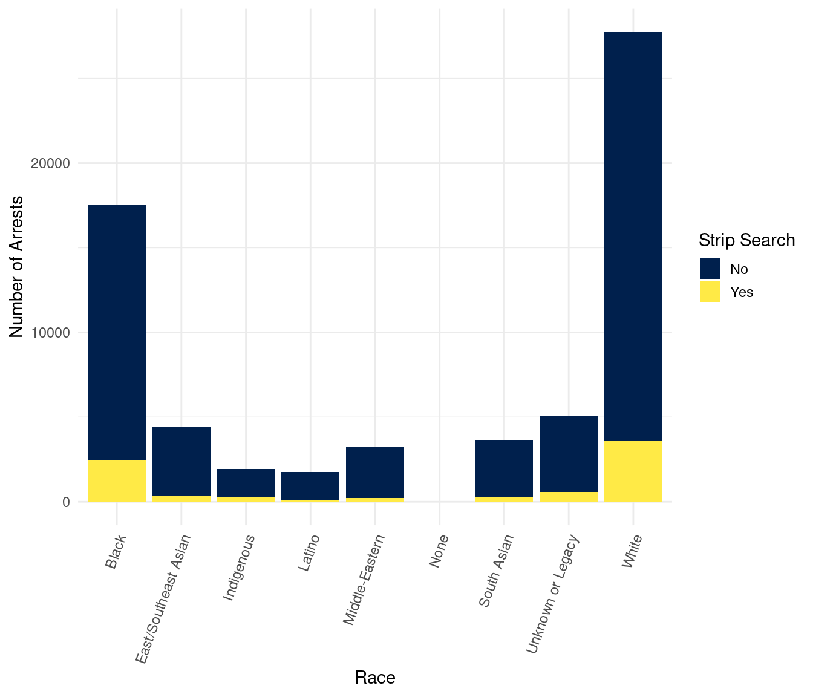
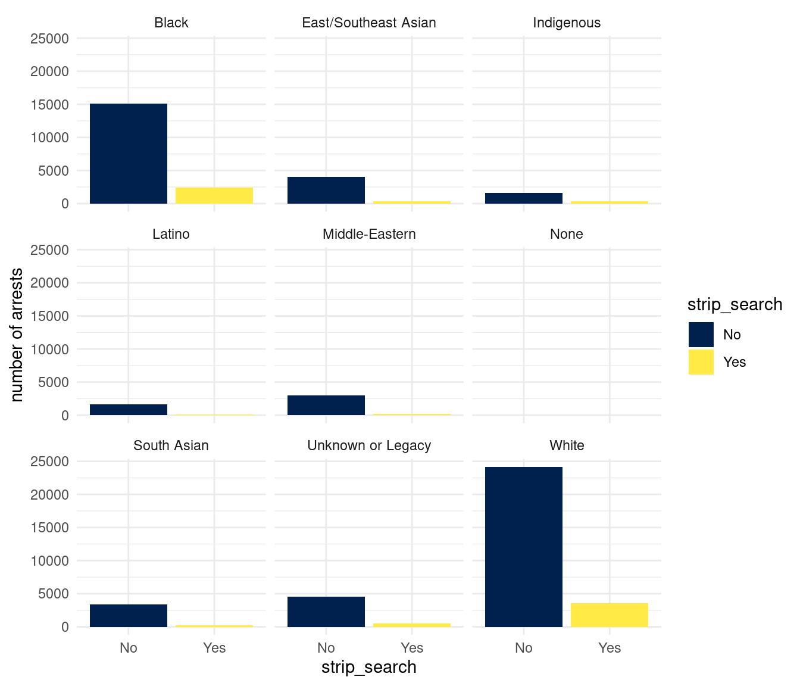
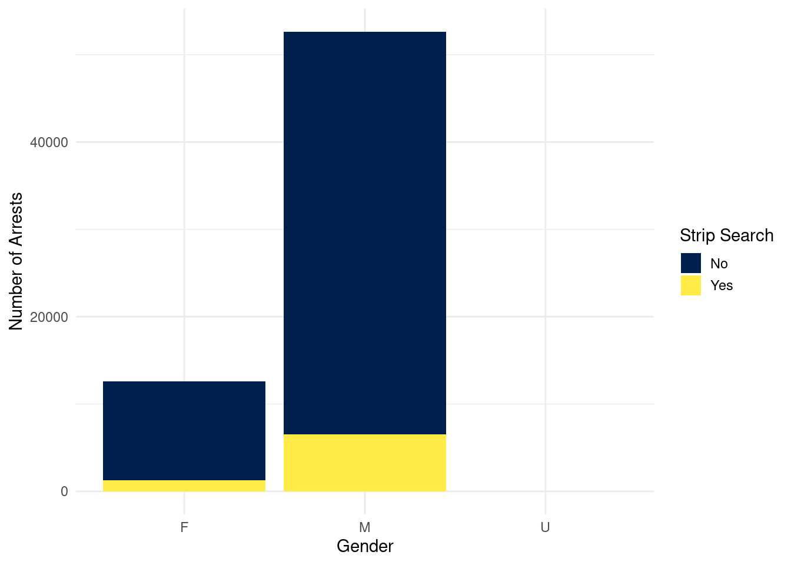
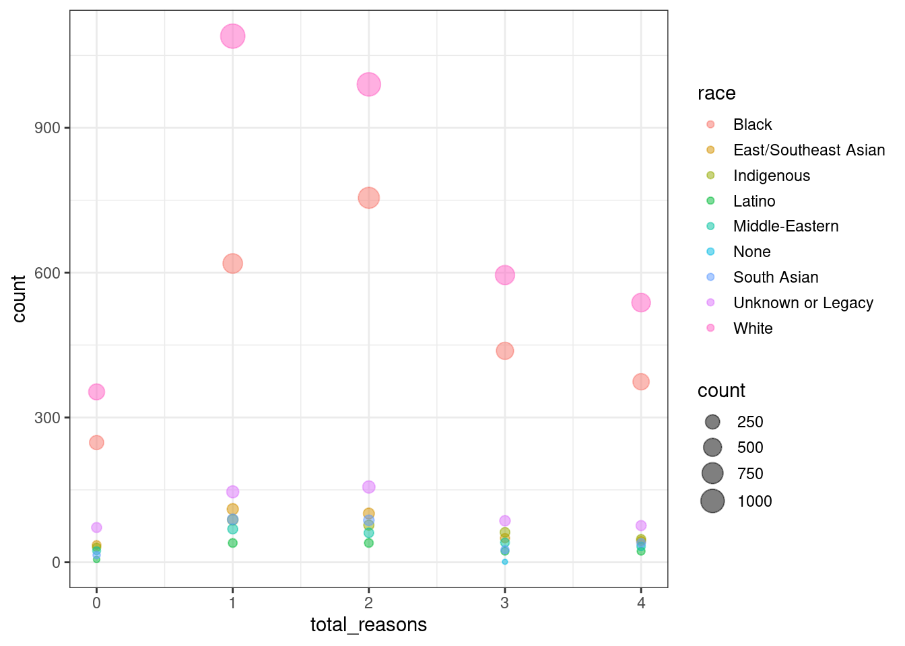
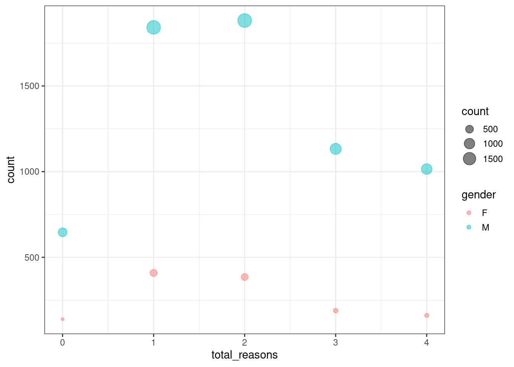

| ID | Race | Gender | Strip Search | Items Found |
|---|---|---|---|---|
| 1005907 | White | M | No | NA |
| 1014562 | White | M | No | NA |
| 1029922 | Unknown or Legacy | M | No | NA |
| 1052190 | Black | M | No | NA |
| 1015512 | South Asian | M | No | NA |
| 1019145 | South Asian | M | No | NA |
1 Introduction
Recently, the Ford government has been at the forefront of public push-back in Toronto, due to their revisions of strip search laws under the Ministry of Correctional Services Act, R.S.O. 1990, c. M.22. Addressed by the Canadian Civil Liberties Association, the revisions “fall short…to ensure that prisoners are treated with basic respect” (O’Brien 2023). By definition, strip search is a police enforcement, which entails removing some or all articles of clothing to visually inspect a person’s private body parts and see if they harbor any items like weapons or drugs (Data 2022). Surprisingly, while contended as a dehumanizing policing act, little has been done to assess strip search as a form of police power abuse in Toronto. This is especially relevant considering the city’s racialized and gendered demographics, how strip searches most likely affect these social groups under the subtext of COVID-19 from 2020 to 2021 (Lemke 2022).
This paper thus inspects gender and racial identities of all Toronto police arrests from 2020 to 2021, and assesses if there is a correlation between marginalized identities and police strip searching. Foremost, this paper aims to be a form of data activism to counter the injustices related to police power abuse around strip searching of the vulnerable Toronto population. To analyze, I first map out the distribution of Toronto police arrests by race and gender and reasons for strip searching from 2020 to 2021 using stacked summary tables, stacked bar charts and bubble charts. Particularly, for each category of race and gender, the distribution bars or points would be sectioned into various categories like ‘including strip searches’ or ‘not including’ to visualize the statistics of strip searching for intersecting social identities With that, It’s worth noting that this dataset may already contain much racial and gender bias, because it was retrieved from the very source that this paper is questioning: the Toronto Police Services (Lemke 2022). Then, the findings presented might not fully encapsulate the actual landscape of strip searching in Toronto from 2020 to 2021. Yet, it’s still worth looking at due the precedents of police power abuse (Allen and Yang 2020).
Structurally then, this paper is organized into the following sections: Data, Results, Discussion, and Conclusion. First, the Data section divulges the nature of the dataset obtained from Open Data Toronto and how data cleaning and extraction took place (Data 2022). Then, all the trends and findings discovered are shown in the Results section, while the Discussion section further assesses these findings. Ultimately, the Conclusion section summarizes the paper’s main insights.
2 Data
The data package used for analysis was sourced from the Open Data Toronto Portal under the library opendatatoronto (Gelfand 2022). Only one dataset was retrieved from the data package to examine the racial and gender identities of Toronto police arrests from 2020 to 2021, which is the package Police Race and Identity Based Data - Arrests and Strip Searches (Data 2022). Data was generated, extracted and cleaned using the open-source statistical programming language R (R Core Team 2022), leveraging functions from tidyverse (Wickham et al. 2019), ggplot2 (Wickham 2016), dplyr (Wickham et al. 2022), readr (Wickham, Hester, and Bryan 2022), tibble (Müller and Wickham 2022), janitor (Firke 2021), kableExtra (Zhu 2021), naniar (Tierney and Cook 2023) and knitr (Xie 2014).
2.1 Overview of Data Extraction and Cleaning
This chosen dataset was published by Toronto Police Services to convey information related to all police arrests and strip searches from 2020 to 2021 (last updated on December 2, 2022). Originally, the dataset features information on date of arrest, event id, the arrested person’s race, sex, and age group, arrest location, whether the arrest includes strip searching, the person’s action at the time of arrest, and the police’s reason for strip searching along with details on any items found. Informative as it is, the dataset contains much naming inconsistency and many columns outside the scope of this paper. Thus, in order to conduct an intersectional—or gender and race—analysis of police strip searches, I have to further clean this dataset and split it into two smaller datasets. Additional details on data extraction and cleaning will be specified in subsequent sections.
2.2 Racial and Gender Identities of Police Strip Search
To streamline the data regarding racial and gender identities of the people involved in police strip searches, the names within the original dataset are simplified and then the dataset is split into a smaller one containing relevant columns (see 1). This dataset contains demographic and strip search-relevant information for each police arrest event, such as race, gender, whether the event involves a strip search, and if it is a strip search, are there any items found.
Specifically, the column ‘Strip Search’ signifies whether an arrest involves strip search. As for the ‘Items Found’ column, either a 1 or a 0 will appear in a data cell if the ‘Strip Search’ value of an event is a 1. This is because the items found within a strip search is only available when a police arrest does involve strip searching.
Furthermore, the reason for keeping rows of events that don’t include strip search is to later produce summary statistics of events with and without strip searches. This further aligns with the task of the paper at hand, which is to critically reflect on the rate of strip searching on people with racialized and gendered identities.
2.3 Reasons for Police Strip Search
The other dataset conveys all police arrests that involve strip searching and the reasons behind strip searching. Under close examination, the naming of individual data cells in different columns from the original, raw dataset is quite disordered, for instance, using None and XX in place of the usual NA. Thus, all inconsistent data cells were renamed to streamline the naming conventions and data processing later on. After renaming, the big dataset was split into containing relevant columns (see 2). Then, for this particular dataset, all instances of police arrests without strip searching are dropped using the filter() function, along with a !is.na() function for rows with NA as values for all the reason column.
Except for “ID” column, all other columns in this new dataset are reasons which account for why the Toronto police force conducts strip search under certain arrests. For instance, “Reason - Assist Escape” is for people who may have helped other suspects escape and “Reason - Possess Evidence” is for people who are suspected of harboring items like drugs or an alibi. For each “Reason” column, if the data cell contains 0, this means that strip search doesn’t happen because of that particular reason. Vice versa, if it contains 1, this means strip search happens because of that reason. In addition, a new column called “Total Reasons” totals all reasons used to account for each police strip search is added with mutate(), where all instances of 1 and 0 are changed into numeric with as.numeric() and then summed together.
| ID | Reason - Injury | Reason - Escape | Reason - Weapons | Reason - Has Evidence | Items_Found | Total Reasons |
|---|---|---|---|---|---|---|
| 1039002 | 1 | 1 | 1 | 0 | 0 | 3 |
| 1045382 | 1 | 1 | 1 | 0 | 0 | 3 |
| 1041209 | 1 | 0 | 0 | 0 | 0 | 1 |
| 1026070 | 0 | 0 | 1 | 1 | 0 | 2 |
| 1028958 | 1 | 0 | 1 | 0 | 0 | 2 |
| 1026364 | 1 | 0 | 0 | 0 | 0 | 1 |
3 Results
cite toronto population to say that while the number of white poeple seem large, it’s not really
3.1 Racialized and Gendered Police Strip Searches Statistics
| Race | Strip Search | Number of Arrests | Percentage |
|---|---|---|---|
| Black | No | 15092 | 86 |
| Black | Yes | 2434 | 14 |
| East/Southeast Asian | No | 4074 | 92 |
| East/Southeast Asian | Yes | 341 | 8 |
| Indigenous | No | 1628 | 84 |
| Indigenous | Yes | 306 | 16 |
| Latino | No | 1636 | 93 |
| Latino | Yes | 132 | 7 |
| Middle-Eastern | No | 3009 | 93 |
| Middle-Eastern | Yes | 228 | 7 |
| None | No | 3 | 75 |
| None | Yes | 1 | 25 |
| South Asian | No | 3356 | 93 |
| South Asian | Yes | 257 | 7 |
| Unknown or Legacy | No | 4520 | 89 |
| Unknown or Legacy | Yes | 536 | 11 |
| White | No | 24157 | 87 |
| White | Yes | 3566 | 13 |


| Gender | Strip Search | Number of Arrests | Percentage |
|---|---|---|---|
| F | No | 11334 | 90 |
| F | Yes | 1283 | 10 |
| M | No | 46132 | 88 |
| M | Yes | 6518 | 12 |
| U | No | 9 | 100 |

3.2 Police Strip Searches and Items Found Statistics
| Strip Search | Items Found | Number of Arrests |
|---|---|---|
| Yes | 0 | 4890 |
| Yes | 1 | 2911 |
| Number of Reasons | Items Found | Count |
|---|---|---|
| 0 | 0 | 465 |
| 0 | 1 | 320 |
| 1 | 0 | 1527 |
| 1 | 1 | 724 |
| 2 | 0 | 1384 |
| 2 | 1 | 883 |
| 3 | 0 | 778 |
| 3 | 1 | 544 |
| 4 | 0 | 736 |
| 4 | 1 | 440 |
NULL
NULL
4 Discussion
5 Conclusion
6 References
Allen, Kate, and Jennifer Yang. 2020. “Police Violence and COVID-19 Fuel a Push to Declare Anti-Black Racism a Public Health Crisis.” https://www.thestar.com/news/canada/police-violence-and-covid-19-fuel-a-push-to-declare-anti-black-racism-a-public/article_8585a5a0-703c-5746-8d4a-fec334b8a0d8.html.
Data, Toronto Open. 2022. “Police Race and Identity Based Data - Arrests and Strip Searches.” https://open.toronto.ca/dataset/police-race-and-identity-based-data-collection-arrests-strip-searches/.
Firke, Sam. 2021. Janitor: Simple Tools for Examining and Cleaning Dirty Data. https://CRAN.R-project.org/package=janitor.
Gelfand, Sharla. 2022. Opendatatoronto: Access the City of Toronto Open Data Portal. https://CRAN.R-project.org/package=opendatatoronto.
Lemke, Monika. 2022. “Strip Searches Are Ineffective, Unnecessary and Target Racialized Canadians.” https://theconversation.com/strip-searches-are-ineffective-unnecessary-and-target-racialized-canadians-185187.
Müller, Kirill, and Hadley Wickham. 2022. Tibble: Simple Data Frames. https://CRAN.R-project.org/package=tibble.
O’Brien, Abby. 2023. “Advocates Slam Ford Government’s Revisions to Ontario Strip Search Laws, Demand Immediate Reform.” https://toronto.ctvnews.ca/recent-changes-made-to-ontario-strip-search-laws-are-woefully-inadequate-ccla-1.6537737?cache=tzbrsjtr.
R Core Team. 2022. R: A Language and Environment for Statistical Computing. Vienna, Austria: R Foundation for Statistical Computing. https://www.R-project.org/.
Tierney, Nicholas, and Dianne Cook. 2023. “Expanding Tidy Data Principles to Facilitate Missing Data Exploration, Visualization and Assessment of Imputations.” Journal of Statistical Software 105 (7): 1–31. https://doi.org/10.18637/jss.v105.i07.
Wickham, Hadley. 2016. Ggplot2: Elegant Graphics for Data Analysis. Springer-Verlag New York. https://ggplot2.tidyverse.org.
Wickham, Hadley, Mara Averick, Jennifer Bryan, Winston Chang, Lucy D’Agostino McGowan, Romain François, Garrett Grolemund, et al. 2019. “Welcome to the tidyverse.” Journal of Open Source Software 4 (43): 1686. https://doi.org/10.21105/joss.01686.
Wickham, Hadley, Romain François, Lionel Henry, and Kirill Müller. 2022. Dplyr: A Grammar of Data Manipulation. https://CRAN.R-project.org/package=dplyr.
Wickham, Hadley, Jim Hester, and Jennifer Bryan. 2022. Readr: Read Rectangular Text Data. https://CRAN.R-project.org/package=readr.
Xie, Yihui. 2014. “Knitr: A Comprehensive Tool for Reproducible Research in R.” In Implementing Reproducible Computational Research, edited by Victoria Stodden, Friedrich Leisch, and Roger D. Peng. Chapman; Hall/CRC. http://www.crcpress.com/product/isbn/9781466561595.
Zhu, Hao. 2021. kableExtra: Construct Complex Table with ’Kable’ and Pipe Syntax. https://CRAN.R-project.org/package=kableExtra.